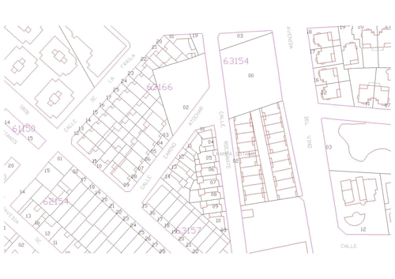

Expedientes 900D
Recepción, registro, comprobación y tramitación de declaraciones de alteraciones catastrales.
R&M CATASTRALES
Servicios especializados de apoyo técnico y administrativo para la conservación y actualización de la información catastral.
EMPRESA
R&M Catastrales presta servicios de apoyo técnico y administrativo para la gestión y conservación de la información catastral.
Trabajamos con Administraciones y entidades dentro del alcance definido en cada encargo, con una metodología orientada a la calidad y trazabilidad de la información.
ÁMBITOS DE ACTUACIÓN
Servicios de gestión y apoyo catastral organizados según la naturaleza de cada actuación y el alcance de cada encargo.
Recepción, registro, comprobación y tramitación de declaraciones de alteraciones catastrales.
Tratamiento de transmisiones de dominio, bajas, cotitularidades y demás datos jurídicos objeto del expediente.
Gestión de modificaciones relativas a construcciones, reformas, segregaciones, divisiones, agrupaciones y otras alteraciones.
Preparación y actualización de la documentación gráfica y cartográfica necesaria para cada actuación.
Recepción de documentación y apoyo informativo en las materias incluidas en el servicio.
Recepción, registro y traslado de escritos, alegaciones y recursos en los términos establecidos para cada encargo.
TRABAJOS DE CAMPO
Los trabajos de campo se realizan sobre aquellos inmuebles respecto de los que se haya detectado una incidencia en su situación catastral.
Cuando la documentación del expediente no permita aclarar la incidencia detectada, se realiza la visita necesaria para obtener los datos que permitan definir el inmueble y completar la actuación.
Durante la visita se contrastan los datos catastrales disponibles con la realidad física observada y se recogen las evidencias necesarias para completar el expediente.
ADMINISTRACIONES PÚBLICAS
La actividad de R&M Catastrales incluye trabajos realizados para Administraciones y entidades públicas, dentro de las condiciones y prestaciones establecidas en cada encargo.
La relación que se muestra a continuación recoge las administraciones y entidades incluidas en la documentación aportada.
EXPERIENCIA
Relación de trabajos y entidades incluida en la documentación de experiencia aportada.
Trabajos de mantenimiento de I.B.I. Rústica y/o Urbana.
Entidades municipales incluidas en la relación aportada.
Trabajos de asistencia técnica y actualización catastral.
Municipios incluidos en la relación aportada.
Municipios incluidos en la relación aportada.
ATENCIÓN AL CONTRIBUYENTE
Si necesita aportar documentación relacionada con un expediente o con la información catastral, puede utilizar este formulario para enviarnos sus datos y adjuntar los documentos necesarios.
CONTACTO
Para información sobre nuestros servicios y prestaciones, puede ponerse en contacto con R&M Catastrales.
CALLEJERO MUNICIPAL
Actualización de la numeración y de la información del callejero municipal, con especial atención a la correspondencia entre las direcciones y los inmuebles.
SERVICIO
Actuaciones específicas para mantener actualizadas las vías y la numeración municipal y resolver las incidencias que afectan a su identificación.
Inventario y revisión de vías, tramos y denominaciones existentes en la información municipal.
Actualización de la numeración asignada a los inmuebles conforme a la información disponible.
Preparación y tramitación de los expedientes CNOT vinculados a la numeración del callejero.
Comprobación de la correspondencia de las direcciones con la información utilizada en la gestión del IBI.
Uso de cartografía de apoyo cuando sea necesaria para identificar una vía, parcela o inmueble.
Identificación de errores, omisiones o discordancias que deban corregirse.
El trabajo comienza con la recopilación y revisión de las fuentes municipales y de la documentación disponible.
A partir de ese contraste se documentan las incidencias y se preparan las modificaciones necesarias para su tramitación.
Una vez comprobados los datos, se preparan las actuaciones necesarias para actualizar la información y mantener una correspondencia adecuada entre el callejero, Catastro y la información tributaria municipal.
Reunir la información municipal y las fuentes de referencia.
Comparar vías, numeración y localización de los inmuebles.
Registrar las incidencias y preparar los cambios necesarios.
Aplicar el procedimiento correspondiente a cada modificación.
ORTOFOTO Y DOCUMENTACIÓN GRÁFICA
Planos y ortofotografía empleados como soporte visual para localizar y documentar las incidencias detectadas.
